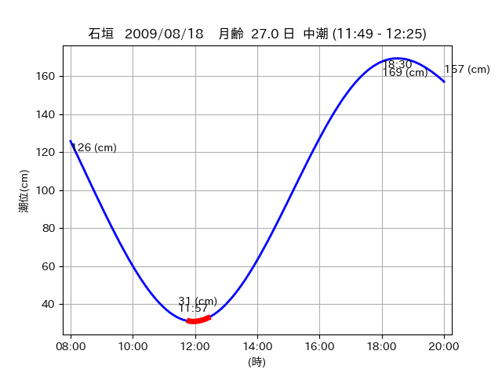

<!DOCTYPE html>
<html>
<head>
    
    <meta http-equiv="content-type" content="text/html; charset=UTF-8" />
    
        <script>
            L_NO_TOUCH = false;
            L_DISABLE_3D = false;
        </script>
    
    <style>html, body {width: 100%;height: 100%;margin: 0;padding: 0;}</style>
    <style>#map {position:absolute;top:0;bottom:0;right:0;left:0;}</style>
    <script src="https://cdn.jsdelivr.net/npm/leaflet@1.9.3/dist/leaflet.js"></script>
    <script src="https://code.jquery.com/jquery-3.7.1.min.js"></script>
    <script src="https://cdn.jsdelivr.net/npm/bootstrap@5.2.2/dist/js/bootstrap.bundle.min.js"></script>
    <script src="https://cdnjs.cloudflare.com/ajax/libs/Leaflet.awesome-markers/2.0.2/leaflet.awesome-markers.js"></script>
    <link rel="stylesheet" href="https://cdn.jsdelivr.net/npm/leaflet@1.9.3/dist/leaflet.css"/>
    <link rel="stylesheet" href="https://cdn.jsdelivr.net/npm/bootstrap@5.2.2/dist/css/bootstrap.min.css"/>
    <link rel="stylesheet" href="https://netdna.bootstrapcdn.com/bootstrap/3.0.0/css/bootstrap-glyphicons.css"/>
    <link rel="stylesheet" href="https://cdn.jsdelivr.net/npm/@fortawesome/fontawesome-free@6.2.0/css/all.min.css"/>
    <link rel="stylesheet" href="https://cdnjs.cloudflare.com/ajax/libs/Leaflet.awesome-markers/2.0.2/leaflet.awesome-markers.css"/>
    <link rel="stylesheet" href="https://cdn.jsdelivr.net/gh/python-visualization/folium/folium/templates/leaflet.awesome.rotate.min.css"/>
    
            <meta name="viewport" content="width=device-width,
                initial-scale=1.0, maximum-scale=1.0, user-scalable=no" />
            <style>
                #map_a8c1df7686a4131442ac9adb6967d3f1 {
                    position: relative;
                    width: 2048.0px;
                    height: 1600.0px;
                    left: 0.0%;
                    top: 0.0%;
                }
                .leaflet-container { font-size: 1rem; }
            </style>
        
</head>
<body>
    
    
            <div class="folium-map" id="map_a8c1df7686a4131442ac9adb6967d3f1" ></div>
        
</body>
<script>
    
    
            var map_a8c1df7686a4131442ac9adb6967d3f1 = L.map(
                "map_a8c1df7686a4131442ac9adb6967d3f1",
                {
                    center: [24.049, 123.805],
                    crs: L.CRS.EPSG3857,
                    ...{
  "zoom": 12,
  "zoomControl": true,
  "preferCanvas": false,
}

                }
            );

            

        
    
            var tile_layer_aa6b5c94675cf1d8d587999350733a62 = L.tileLayer(
                "https://cyberjapandata.gsi.go.jp/xyz/seamlessphoto/{z}/{x}/{y}.jpg",
                {
  "minZoom": 0,
  "maxZoom": 18,
  "maxNativeZoom": 18,
  "noWrap": false,
  "attribution": "\u5730\u7406\u9662\u5730\u56f3",
  "subdomains": "abc",
  "detectRetina": false,
  "tms": false,
  "opacity": 1,
}

            );
        
    
            tile_layer_aa6b5c94675cf1d8d587999350733a62.addTo(map_a8c1df7686a4131442ac9adb6967d3f1);
        
    
            var marker_f795e7d41ea29f58f01be13ee3328e40 = L.marker(
                [24.0724, 123.7201],
                {
}
            ).addTo(map_a8c1df7686a4131442ac9adb6967d3f1);
        
    
            var icon_5016194a2eb47c7b680e53b7d94efa26 = L.AwesomeMarkers.icon(
                {
  "markerColor": "orange",
  "iconColor": "white",
  "icon": "info-sign",
  "prefix": "glyphicon",
  "extraClasses": "fa-rotate-0",
}
            );
        
    
        var popup_2d758d5a4ba07de79e9d5c9f1b318303 = L.popup({
  "maxWidth": "100%",
});

        
            
                var html_01016fd0b2ed8672ba919440003697ad = $(`<div id="html_01016fd0b2ed8672ba919440003697ad" style="width: 100.0%; height: 100.0%;"><table><tr><td></td></tr><tr><td><center>20090818 No.1 </center></table></td></tr></table</div>`)[0];
                popup_2d758d5a4ba07de79e9d5c9f1b318303.setContent(html_01016fd0b2ed8672ba919440003697ad);
            
        

        marker_f795e7d41ea29f58f01be13ee3328e40.bindPopup(popup_2d758d5a4ba07de79e9d5c9f1b318303)
        ;

        
    
    
                marker_f795e7d41ea29f58f01be13ee3328e40.setIcon(icon_5016194a2eb47c7b680e53b7d94efa26);
            
    
            var poly_line_71712bf40667f465f58c4168de0ebd94 = L.polyline(
                [[24.0724, 123.7201], [24.0682, 123.7212]],
                {"bubblingMouseEvents": true, "color": "#00FFFF", "dashArray": null, "dashOffset": null, "fill": false, "fillColor": "#00FFFF", "fillOpacity": 0.2, "fillRule": "evenodd", "lineCap": "round", "lineJoin": "round", "noClip": false, "opacity": 1.0, "smoothFactor": 1.0, "stroke": true, "weight": 3}
            ).addTo(map_a8c1df7686a4131442ac9adb6967d3f1);
        
    
            var marker_63a95389be5eb441581ffb1b619ab182 = L.marker(
                [24.0732, 123.7207],
                {
}
            ).addTo(map_a8c1df7686a4131442ac9adb6967d3f1);
        
    
            var icon_3e3b168fcd6f4928760c1b0624ca282f = L.AwesomeMarkers.icon(
                {
  "markerColor": "orange",
  "iconColor": "white",
  "icon": "info-sign",
  "prefix": "glyphicon",
  "extraClasses": "fa-rotate-0",
}
            );
        
    
        var popup_37465b120a7cc2ed80e394bc73437ba8 = L.popup({
  "maxWidth": "100%",
});

        
            
                var html_1d78cf49040a2c611559b32503cd3ed2 = $(`<div id="html_1d78cf49040a2c611559b32503cd3ed2" style="width: 100.0%; height: 100.0%;"><table><tr><td></td></tr><tr><td><center>20090818 No.2 </center></table></td></tr></table</div>`)[0];
                popup_37465b120a7cc2ed80e394bc73437ba8.setContent(html_1d78cf49040a2c611559b32503cd3ed2);
            
        

        marker_63a95389be5eb441581ffb1b619ab182.bindPopup(popup_37465b120a7cc2ed80e394bc73437ba8)
        ;

        
    
    
                marker_63a95389be5eb441581ffb1b619ab182.setIcon(icon_3e3b168fcd6f4928760c1b0624ca282f);
            
    
            var poly_line_58059cf5a44ef47eea5f04b7fd1a7f89 = L.polyline(
                [[24.0732, 123.7207], [24.0719, 123.7215]],
                {"bubblingMouseEvents": true, "color": "#00FFFF", "dashArray": null, "dashOffset": null, "fill": false, "fillColor": "#00FFFF", "fillOpacity": 0.2, "fillRule": "evenodd", "lineCap": "round", "lineJoin": "round", "noClip": false, "opacity": 1.0, "smoothFactor": 1.0, "stroke": true, "weight": 3}
            ).addTo(map_a8c1df7686a4131442ac9adb6967d3f1);
        
    
            var marker_0154675bce57dbefb49d40bb52c3a8fc = L.marker(
                [24.0439, 123.79],
                {
}
            ).addTo(map_a8c1df7686a4131442ac9adb6967d3f1);
        
    
            var icon_c143c02554486c4b180d76df767c4658 = L.AwesomeMarkers.icon(
                {
  "markerColor": "orange",
  "iconColor": "white",
  "icon": "info-sign",
  "prefix": "glyphicon",
  "extraClasses": "fa-rotate-0",
}
            );
        
    
        var popup_04464bd06fbe71a64234cb0bba40baad = L.popup({
  "maxWidth": "100%",
});

        
            
                var html_a28da103bd5f5ee2743daeda0dddac34 = $(`<div id="html_a28da103bd5f5ee2743daeda0dddac34" style="width: 100.0%; height: 100.0%;"><table><tr><td></td></tr><tr><td><center>20090818 No.3 </center></table></td></tr></table</div>`)[0];
                popup_04464bd06fbe71a64234cb0bba40baad.setContent(html_a28da103bd5f5ee2743daeda0dddac34);
            
        

        marker_0154675bce57dbefb49d40bb52c3a8fc.bindPopup(popup_04464bd06fbe71a64234cb0bba40baad)
        ;

        
    
    
                marker_0154675bce57dbefb49d40bb52c3a8fc.setIcon(icon_c143c02554486c4b180d76df767c4658);
            
    
            var poly_line_53bc7becfe76471173f382c51a884094 = L.polyline(
                [[24.0439, 123.79], [24.0442, 123.7933]],
                {"bubblingMouseEvents": true, "color": "#FF00FF", "dashArray": null, "dashOffset": null, "fill": false, "fillColor": "#FF00FF", "fillOpacity": 0.2, "fillRule": "evenodd", "lineCap": "round", "lineJoin": "round", "noClip": false, "opacity": 1.0, "smoothFactor": 1.0, "stroke": true, "weight": 3}
            ).addTo(map_a8c1df7686a4131442ac9adb6967d3f1);
        
    
            var marker_fd6bd971b1fefb5a60eb921aaee5b74b = L.marker(
                [24.0485, 123.804],
                {
}
            ).addTo(map_a8c1df7686a4131442ac9adb6967d3f1);
        
    
            var icon_5a3908fe9391461255b26c3b088ca270 = L.AwesomeMarkers.icon(
                {
  "markerColor": "orange",
  "iconColor": "white",
  "icon": "info-sign",
  "prefix": "glyphicon",
  "extraClasses": "fa-rotate-0",
}
            );
        
    
        var popup_371ee918e415368bedf574a7cb810fce = L.popup({
  "maxWidth": "100%",
});

        
            
                var html_c57077cb51bb8e14a6b9307a97957def = $(`<div id="html_c57077cb51bb8e14a6b9307a97957def" style="width: 100.0%; height: 100.0%;"><table><tr><td></td></tr><tr><td><center>20090818 No.4 </center></table></td></tr></table</div>`)[0];
                popup_371ee918e415368bedf574a7cb810fce.setContent(html_c57077cb51bb8e14a6b9307a97957def);
            
        

        marker_fd6bd971b1fefb5a60eb921aaee5b74b.bindPopup(popup_371ee918e415368bedf574a7cb810fce)
        ;

        
    
    
                marker_fd6bd971b1fefb5a60eb921aaee5b74b.setIcon(icon_5a3908fe9391461255b26c3b088ca270);
            
    
            var poly_line_289bfbd491ebaa10b4e5ec1e02b2f9a6 = L.polyline(
                [[24.0485, 123.804], [24.0498, 123.8067]],
                {"bubblingMouseEvents": true, "color": "#FF00FF", "dashArray": null, "dashOffset": null, "fill": false, "fillColor": "#FF00FF", "fillOpacity": 0.2, "fillRule": "evenodd", "lineCap": "round", "lineJoin": "round", "noClip": false, "opacity": 1.0, "smoothFactor": 1.0, "stroke": true, "weight": 3}
            ).addTo(map_a8c1df7686a4131442ac9adb6967d3f1);
        
</script>
</html>